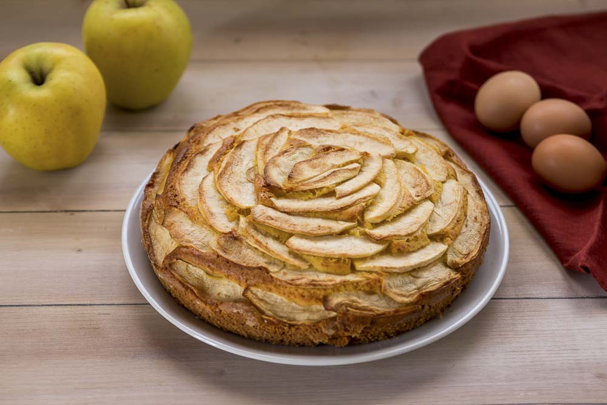

Torta di Mele
Author by Alessia Cillari
Ingredients
- 5-6 medium-sized apples, peeled and sliced
- 1 cup granulated sugar
- 1 teaspoon ground cinnamon
- 2 tablespoons all-purpose flour
- 1 package refrigerated pie crusts
- 2 tablespoons butter, cut into small pieces
Instruction
- Preheat the oven to 425°F (220°C).
- In a large bowl, combine apple slices, sugar, cinnamon, nutmeg, and flour. Toss until apples are coated.
- Roll out one pie crust and place it in a pie dish. Fill with the apple mixture.
- Dot the top of the apples with butter pieces.
- Roll out the second pie crust and place it over the apples. Seal and crimp the edges.
- Cut a few slits on top for venting. Optionally, brush the top crust with milk and sprinkle with sugar.
- Bake for 45-50 minutes or until the crust is golden and the filling is bubbly.
- Allow to cool before serving.